Un tubo que se ramifica veintitrés veces hasta terminar en trescientos millones de alvéolos, un músculo que lo mueve todo y cuatro maneras en que el pulmón se asoma al ojo
Los cuatro consultan por los ojos, y en los cuatro la explicación pasa por la vía aérea o por el pulmón. Responde con lo que ya sabes, sin buscar. Al final de la clase volvemos sobre ellos.
Un hombre de 58 años, fumador desde los 18, dice que el ojo derecho «se le ve más chiquito». El párpado derecho cae uno o dos milímetros y, con la luz baja, la pupila derecha es más pequeña que la izquierda. Hace meses le duele el hombro derecho. ¿Qué tiene que ver el hombro con la pupila?
Una mujer de 66 años con enfisema, que usa oxígeno en casa, viene por visión borrosa. Se despierta con dolor de cabeza. En el fondo de ojo, las dos papilas tienen los bordes borrosos y elevados. ¿Cómo puede un pulmón enfermo hinchar el nervio óptico?
Le pones gotas para dilatar la pupila a un niño de 7 años. Un minuto después hace una mueca: dice que le sabe amarga la garganta. ¿Por dónde viajó la gota desde el ojo hasta la boca, y qué puedes hacer para que no pase?
Una niña de 9 años lleva una semana con mocos espesos y fiebre. Hoy amaneció con el párpado izquierdo rojo e hinchado, le duele mover el ojo y ve doble. ¿Cómo llegó la infección de la nariz a la órbita?
El aparato respiratorio es, ante todo, un tubo que se ramifica: empieza en la nariz y termina en unos 300 millones de alvéolos, bolsitas de pared finísima rodeadas de capilares. Su trabajo es llevar el oxígeno del aire hasta la sangre y sacar el dióxido de carbono que produce el cuerpo. Se ordena de dos maneras, y conviene tenerlas claras desde ya.
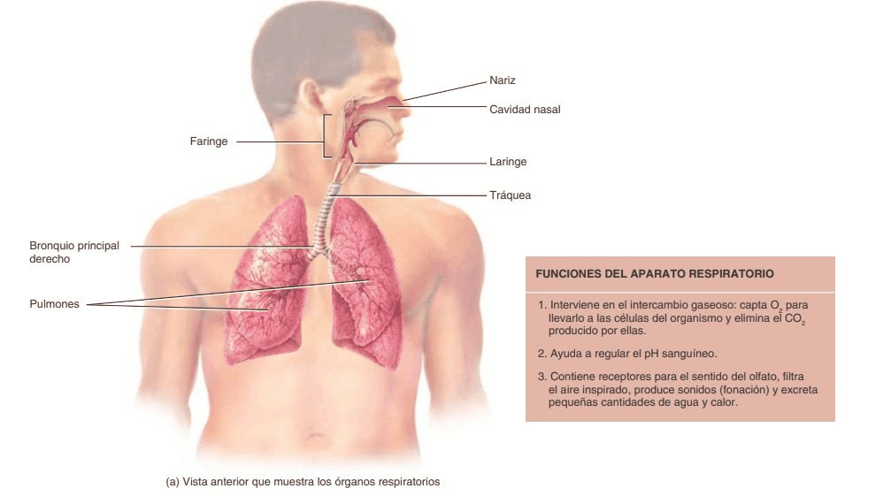
La vía aérea superior es la que está en la cabeza y el cuello: nariz, cavidad nasal, senos paranasales y faringe. La inferior empieza en la laringe y sigue por la tráquea, los bronquios y los pulmones.
La zona de conducción solo lleva el aire, lo filtra, lo calienta y lo humedece: de la nariz a los bronquiolos terminales. La zona respiratoria es donde el aire toca la sangre: bronquiolos respiratorios, conductos alveolares, sacos alveolares y alvéolos.
Todo lo que hay antes del alvéolo es «espacio muerto». Unos 150 mL de cada respiración se quedan en la zona de conducción y nunca participan del intercambio. Por eso respirar rápido y superficial, como un paciente angustiado, mueve mucho aire y oxigena poco.
La cavidad nasal está dividida en dos por el tabique nasal. De su pared lateral cuelgan tres láminas de hueso enrolladas, los cornetes superior, medio e inferior. Debajo de cada uno queda un canal, el meato del mismo nombre. Los cornetes hacen que el aire dé vueltas y roce una mucosa muy irrigada: así se calienta, se humedece y deja pegado el polvo en el moco, que los cilios barren hacia la faringe. En el techo, la mucosa olfatoria recibe las fibras del nervio olfatorio a través de la lámina cribosa del etmoides.
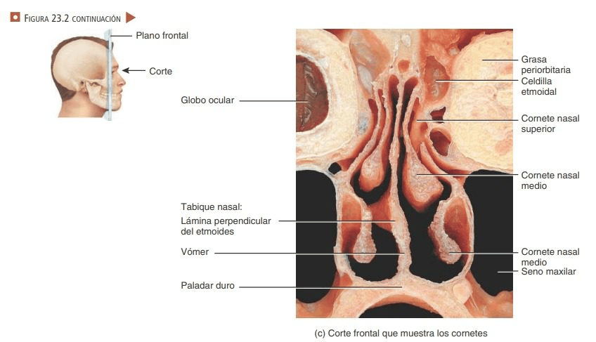
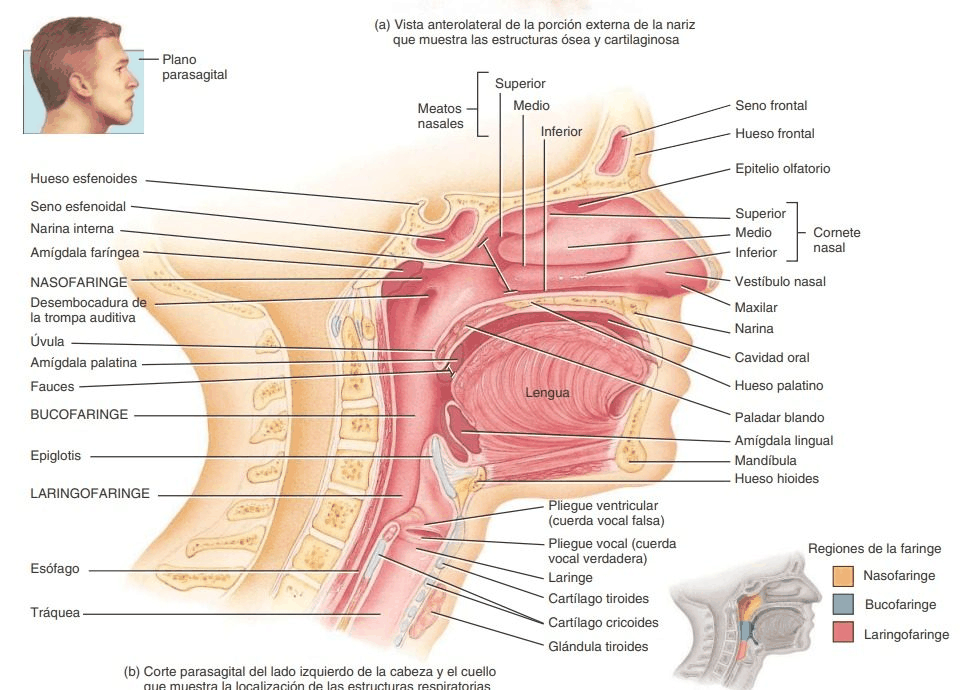
Cuatro huesos del cráneo tienen cavidades llenas de aire, tapizadas por la misma mucosa de la nariz y abiertas a ella: los senos frontal, etmoidales, esfenoidal y maxilar. Aligeran el cráneo y dan resonancia a la voz. Ya los viste en cabeza y cuello; lo nuevo es dónde desagua cada uno.
| Dónde desemboca | Qué llega allí | Por qué le importa al optómetra |
|---|---|---|
| Meato superior | Celdillas etmoidales posteriores | Pegadas al conducto óptico |
| Meato medio | Senos frontal y maxilar, celdillas etmoidales anteriores | El maxilar es el suelo de la órbita; el frontal, su techo |
| Meato inferior | Conducto nasolagrimal | Por aquí sale la lágrima, y con ella las gotas que pones en el ojo |
| Receso esfenoetmoidal | Seno esfenoidal | Debajo de la hipófisis y al lado del seno cavernoso |
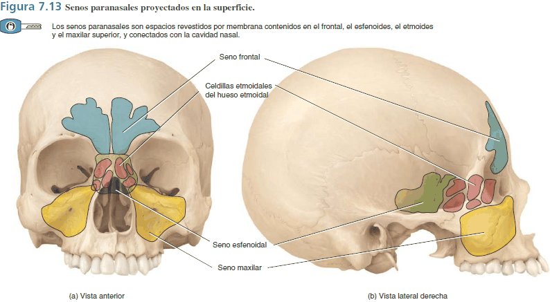
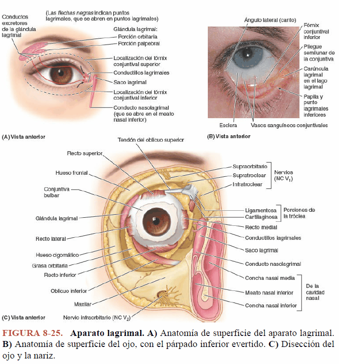
La pared medial de la órbita es la lámina orbitaria del etmoides, tan delgada que la llaman papirácea. Detrás de ella están las celdillas etmoidales, y la atraviesan venas sin válvulas. En un niño con sinusitis etmoidal, la infección puede cruzarla y producir una celulitis orbitaria: párpado rojo e hinchado, dolor al mover el ojo, visión doble y, si avanza, ojo protruido y pérdida de visión. Se distingue de la celulitis preseptal, que se queda delante del septo orbitario y no limita los movimientos del ojo. Dolor al mover el ojo o visión doble en un niño con sinusitis es una urgencia.
La faringe es un tubo muscular de unos 13 cm que comparten el aire y la comida. Tiene tres pisos: la nasofaringe, detrás de la nariz, donde se abren las trompas auditivas y está la amígdala faríngea; la orofaringe, detrás de la boca, con las amígdalas palatinas; y la laringofaringe, que se divide adelante en la laringe y atrás en el esófago.
La laringe es la puerta de la vía aérea inferior. Es un armazón de nueve cartílagos unidos por membranas y músculos:
Dos láminas unidas adelante como un escudo abierto por detrás. Su saliente es la «nuez de Adán», más marcada en el hombre.
Debajo del tiroides. Es el único anillo completo de toda la vía aérea, más alto por detrás, como un anillo de sello. Une la laringe con la tráquea.
Una hoja de cartílago elástico. Al tragar, la laringe sube, la epiglotis la tapa y la comida pasa por detrás, al esófago.
Los otros seis son pares y pequeños: aritenoides, sobre el borde posterior del cricoides, que mueven los pliegues vocales; corniculados y cuneiformes.
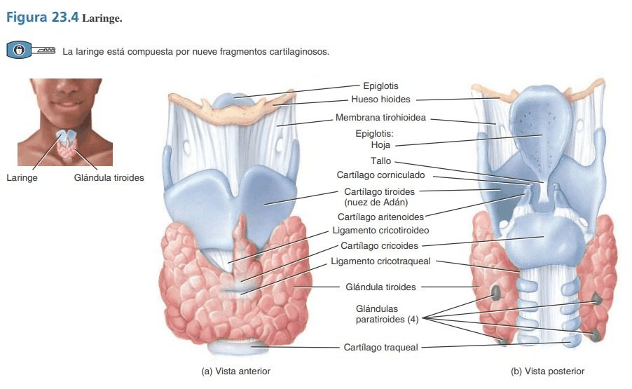
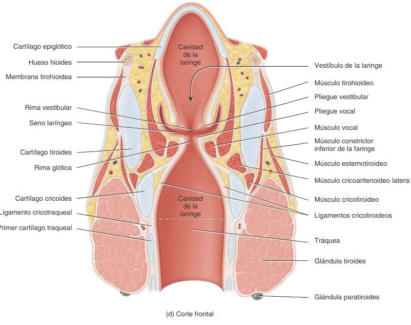
Por dentro, la mucosa de la laringe forma dos pares de pliegues. Los superiores son los pliegues vestibulares («cuerdas vocales falsas»): ayudan a cerrar la laringe al hacer fuerza. Los inferiores son los pliegues vocales, las cuerdas vocales verdaderas. Los pliegues vocales y el espacio que dejan entre ellos, la rima glótica, forman la glotis. Los músculos que mueven los aritenoides tensan los pliegues y los acercan; el aire espirado los hace vibrar. Más tensión, tono más agudo; más fuerza del aire, voz más alta.
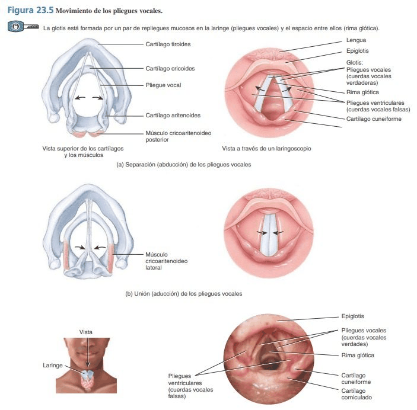
Casi todos los músculos de la laringe los mueve el nervio laríngeo recurrente, rama del vago. El izquierdo baja hasta el tórax, da la vuelta por debajo del arco aórtico y sube entre la tráquea y el esófago. Un tumor del pulmón izquierdo, un ganglio grande en el hilio o un aneurisma de la aorta pueden apretarlo en ese recorrido: un pliegue vocal se paraliza y la voz se vuelve ronca. Una ronquera que dura más de tres semanas en un fumador se estudia.
La tráquea mide unos 12 cm de largo y 2,5 cm de diámetro. Va del cricoides, a la altura de la sexta vértebra cervical, hasta la quinta torácica, delante del esófago. Su pared lleva entre 16 y 20 anillos de cartílago en forma de C, abiertos por detrás. El hueco lo cierran el músculo traqueal y una membrana. El cartílago impide que la tráquea se aplaste al inspirar; la parte blanda de atrás deja que el esófago, pegado a ella, se ensanche cuando pasa la comida.
Por dentro la tapiza un epitelio cilíndrico seudoestratificado ciliado con células caliciformes, el que viste en la clase de tejidos: el moco atrapa partículas y los cilios lo empujan hacia la faringe. El humo del cigarrillo paraliza esos cilios; por eso el fumador tose para sacar lo que los cilios ya no barren.
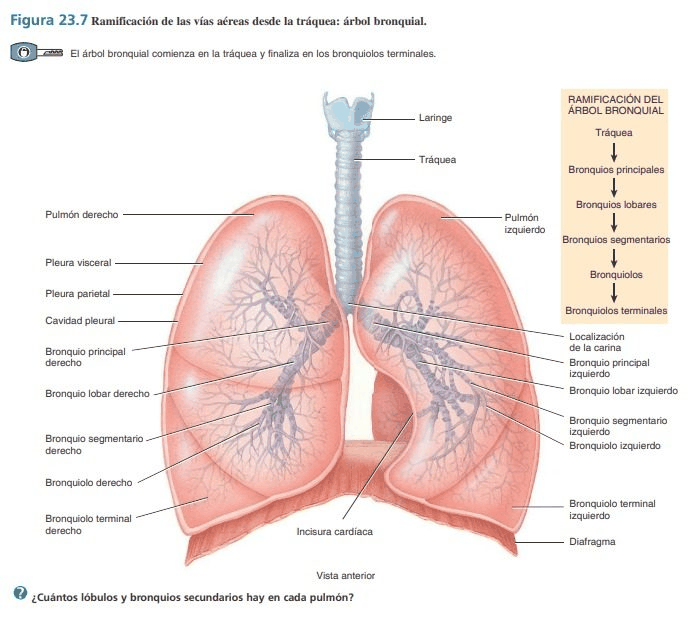
A la altura de la quinta vértebra torácica la tráquea se divide en dos. En el punto de la división, por dentro, hay una cresta de cartílago, la carina, con una mucosa tan sensible que tocarla provoca tos. A medida que el tubo se ramifica, los anillos se vuelven placas sueltas, hasta desaparecer en los bronquiolos, y el músculo liso gana espacio. En el asma ese músculo se contrae de más y cierra los bronquiolos, que ya no tienen cartílago que los sostenga.
El bronquio derecho es la vía más fácil. El bronquio principal derecho es más corto, más ancho y más vertical que el izquierdo, que tiene que pasar por encima del corazón y por debajo del arco aórtico. Lo que se cuela por la carina suele seguir el camino más recto.
Los pulmones son dos conos esponjosos que llenan la cavidad torácica a cada lado del corazón. La base descansa sobre el diafragma. El vértice sube hasta 2,5 cm por encima de la clavícula, en la raíz del cuello: allí el pulmón tiene por vecinos a los vasos y nervios que van al brazo y a la cadena simpática. La cara medial tiene el hilio, la puerta por donde entran y salen los bronquios, los vasos y los nervios.
Más ancho y más corto, porque el hígado empuja el diafragma hacia arriba. Tres lóbulos separados por dos fisuras, la oblicua y la horizontal.
Más estrecho, para dejarle sitio al corazón. Dos lóbulos y una sola fisura, la oblicua. En el borde anterior tiene la escotadura cardíaca y, debajo, una lengüeta del lóbulo superior, la língula.
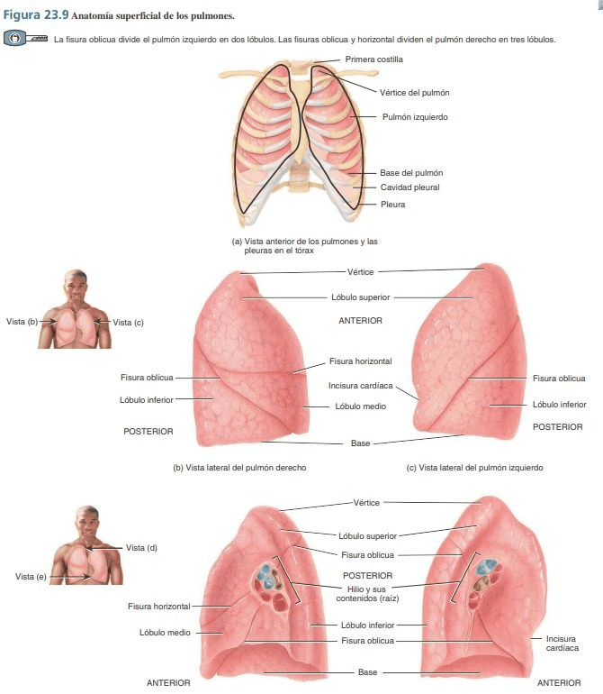
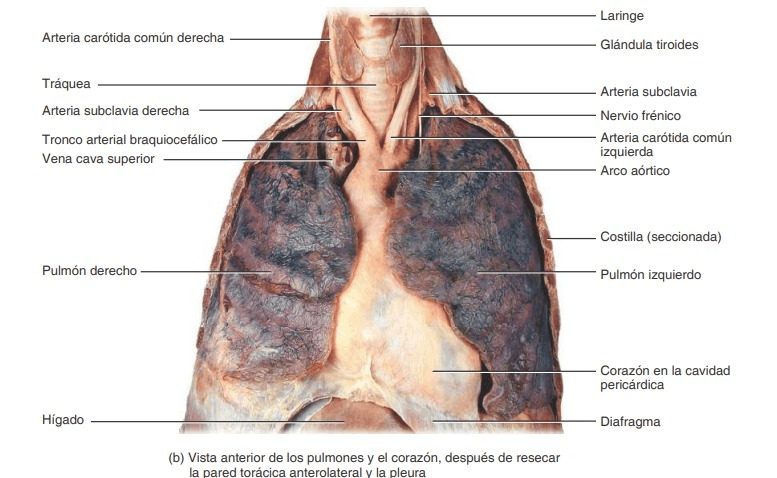
Cada pulmón está envuelto por una bolsa cerrada de serosa, la pleura. La pleura visceral está pegada al pulmón; la parietal, a la pared del tórax, al diafragma y al mediastino. Entre las dos queda la cavidad pleural, un espacio virtual con una película de líquido que las deja resbalar y, a la vez, las mantiene pegadas, como dos vidrios mojados. En la parte baja, la pleura parietal forma los recesos costodiafragmáticos, donde se acumula el líquido cuando sobra.
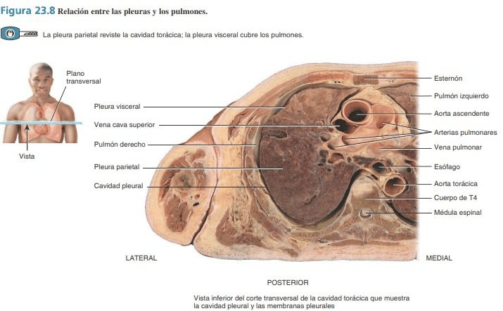
Normalmente la presión dentro de la cavidad pleural es menor que la atmosférica: el pulmón, que es elástico, tira hacia dentro, y la pared, hacia fuera. Si entra aire a la cavidad, por una herida o porque se rompe una burbuja en la superficie del pulmón, esa presión se iguala y el pulmón se colapsa sobre su hilio. Dolor de un lado al respirar y falta de aire súbita, típico en hombres jóvenes, altos y delgados.
Cada bronquiolo terminal abre un lobulillo: bronquiolos respiratorios, conductos alveolares y racimos de alvéolos, los sacos alveolares. Si se pudiera extender la superficie de todos los alvéolos, cubriría unos 70 m², media cancha de tenis, metida en el pecho.
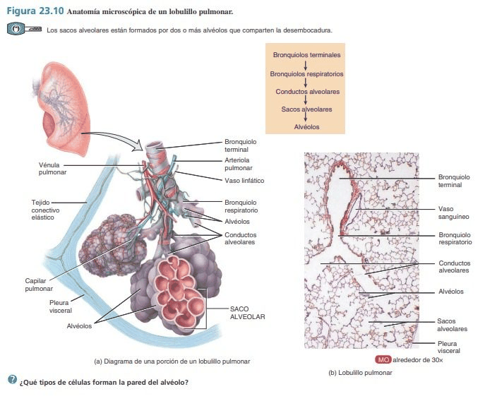
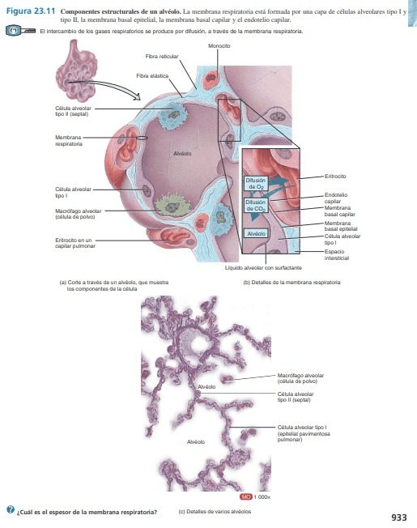
Epitelio plano simple que forma casi toda la pared. Tan delgado que el gas lo cruza sin esfuerzo.
Menos numeroso, cúbico. Secreta el surfactante, que baja la tensión superficial del agua que moja el alvéolo. Sin él, los alvéolos se cerrarían al espirar, como bolsitas mojadas que se pegan.
Recorre la superficie y se come el polvo y los microbios que llegaron hasta allí. Los que no salen se quedan en el tejido: de ahí el color de los pulmones del fumador.
Entre el aire y la sangre solo hay 0,5 µm: la pared del alvéolo, la del capilar y las dos membranas basales fusionadas. Es la membrana respiratoria. Todo lo que la engrose —líquido en un edema pulmonar, cicatriz en una fibrosis— frena el paso del oxígeno.
El prematuro que no tiene surfactante. Los neumocitos tipo II empiezan a fabricar surfactante suficiente hacia el final del embarazo. Un bebé que nace muy antes no lo tiene: sus alvéolos se cierran en cada espiración. Recibe oxígeno, y en exceso el oxígeno daña los vasos de una retina inmadura: es la retinopatía del prematuro, que se tamiza en el examen de fondo de ojo de todo recién nacido de riesgo.
El aire no se «chupa»: entra solo cuando la presión dentro de los alvéolos es menor que la de afuera. Para lograrlo, el cuerpo cambia el tamaño del tórax. Es la ley de Boyle: a temperatura constante, si el volumen de un gas aumenta, su presión baja, y al revés.
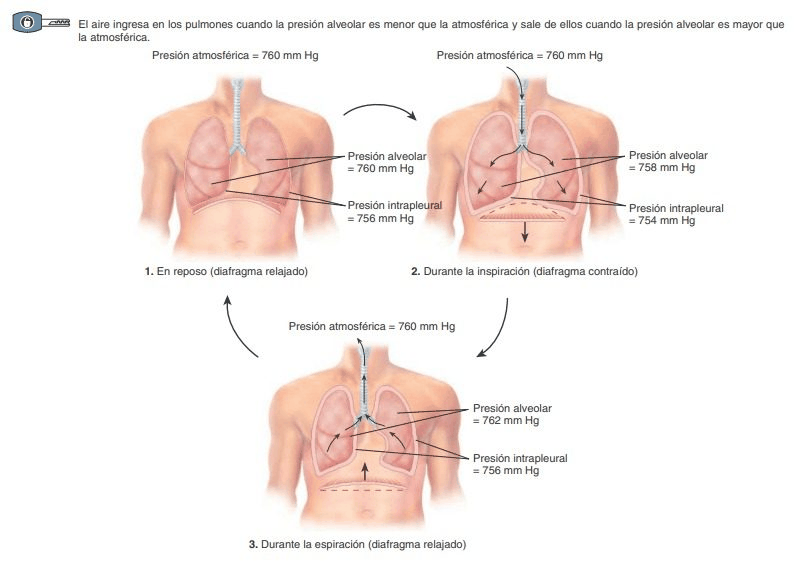
El diafragma se contrae, se aplana y baja: hace el 75 % del trabajo. Los intercostales externos suben las costillas y el esternón. Cuando hace falta más aire, ayudan el esternocleidomastoideo, los escalenos y el pectoral menor: son los músculos accesorios.
En reposo basta con soltar. El diafragma se relaja, el pulmón vuelve a su tamaño por su propia elasticidad y el aire sale. Solo al hacer fuerza —toser, soplar, hacer ejercicio— trabajan los intercostales internos y los músculos del abdomen.
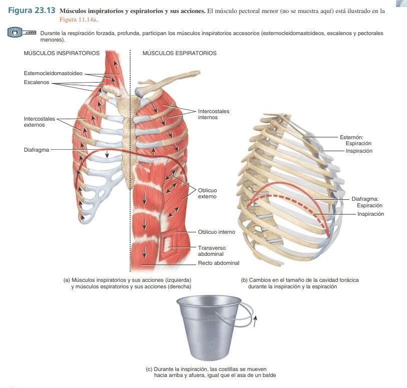
El diafragma lo mueve el nervio frénico, que nace de los segmentos cervicales C3, C4 y C5 y baja por el cuello y el tórax, sobre el pericardio, hasta el músculo. Una lesión de la médula por debajo de C5 paraliza brazos o piernas, pero el paciente respira solo. Una lesión por encima de C3 lo deja sin diafragma: necesita un ventilador para vivir. Y una irritación del diafragma puede doler en el hombro, porque los mismos segmentos reciben la sensibilidad de esa zona.
La anatomía es el centro de esta clase, pero para entender cómo el pulmón llega al ojo necesitas tres ideas de fisiología. Están en breve; las desarrollará la asignatura de fisiología.
Cada gas se mueve según su presión parcial: la parte de la presión total que le toca. En el alvéolo el oxígeno está a unos 105 mm Hg y en la sangre que llega, a 40: pasa a la sangre. El dióxido de carbono hace el camino contrario, de 45 en la sangre a 40 en el alvéolo. En los tejidos todo se invierte.
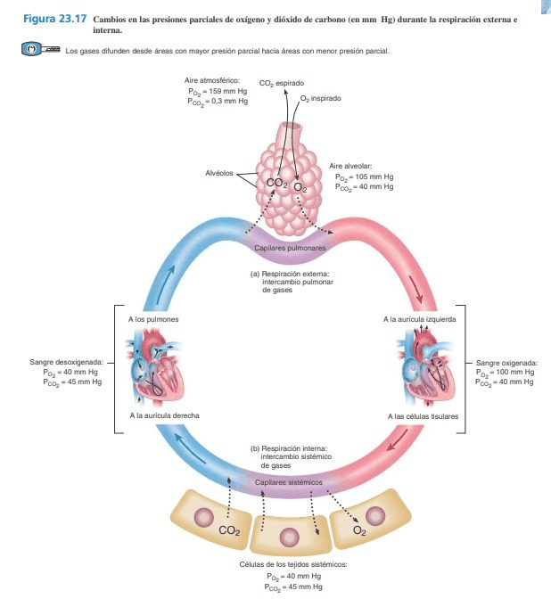
En Bogotá esto se nota. A 2600 m la presión del aire es de unos 560 mm Hg, no 760. El oxígeno sigue siendo el 21 %, pero su presión parcial baja de 159 a unos 117 mm Hg. Por eso al subir respiramos más rápido y los que vienen de la costa se cansan los primeros días.
Disuelto en el plasma va menos del 2 % del oxígeno; el 98,5 % viaja pegado a la hemoglobina de los glóbulos rojos. La hemoglobina cargada es roja brillante; la que soltó su oxígeno es más oscura. El dióxido de carbono vuelve sobre todo como bicarbonato disuelto en el plasma.
El monóxido de carbono (CO), que sale de un calentador mal ventilado o de un motor encendido en un garaje, se pega a la hemoglobina unas 200 veces más que el oxígeno y no la suelta. La sangre queda roja, pero no lleva oxígeno.
El ritmo lo marcan grupos de neuronas del bulbo raquídeo y la protuberancia, que mandan órdenes al frénico y a los intercostales. Lo que más los estimula es que suba el dióxido de carbono en la sangre: los quimiorreceptores centrales, en el bulbo, lo detectan en minutos. Los periféricos, en los cuerpos carotídeos y aórticos, avisan además cuando el oxígeno baja mucho. Ojo: el cuerpo carotídeo mide gases; el seno carotídeo, que viste en circulatorio, mide la presión.
Dos músculos del ojo dependen del simpático: el músculo dilatador de la pupila, que la abre, y el músculo tarsal superior (de Müller), una lámina de músculo liso que ayuda al elevador a sostener el párpado uno o dos milímetros más arriba. La orden que los mueve hace un recorrido sorprendente: baja hasta el tórax, pasa sobre el vértice del pulmón y sube otra vez a la cabeza.
El párpado superior cae 1 a 2 mm, porque se paraliza el músculo tarsal, no el elevador. A veces el párpado inferior sube un poco: es la ptosis invertida. Una ptosis que tapa la pupila no es un Horner: es del III par.
La pupila del lado afectado es más pequeña y no se dilata bien en la oscuridad. La diferencia entre las dos pupilas es mayor en penumbra que con luz. Reacciona a la luz con normalidad: el esfínter, parasimpático, está intacto.
La mitad de la cara no suda, si la lesión está antes de que las fibras del sudor se separen con la carótida externa, como en el tórax o el cuello.
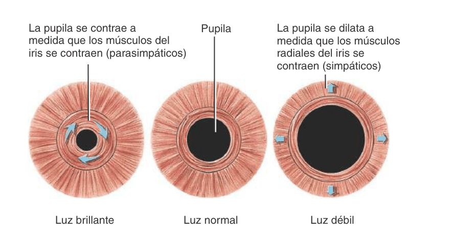
Ante dos pupilas de distinto tamaño, mídelas con luz y en penumbra:
| La diferencia es mayor… | Falla | Piensa en |
|---|---|---|
| en penumbra | la pupila pequeña no se dilata | Horner (simpático) |
| con luz | la pupila grande no se contrae | III par o gotas dilatadoras (parasimpático) |
Es un cáncer del pulmón que nace en el vértice, casi siempre en fumadores. Al crecer hacia la raíz del cuello alcanza la cadena simpática y las raíces C8–T1 del plexo braquial. Por eso el cuadro típico junta un Horner con dolor en el hombro y el brazo y debilidad de la mano, a veces con una radiografía de tórax «casi normal», porque el vértice se esconde detrás de la clavícula. Un Horner que aparece en un adulto se remite el mismo día: puede ser este tumor, o una disección de la carótida en el cuello, que es una urgencia neurológica.
La retina es el único sitio del cuerpo donde se miran vasos y nervio sin abrir nada, y la conjuntiva es una mucosa a la vista. Por eso un pulmón que no funciona deja huellas que el optómetra puede ver primero.
El dióxido de carbono es el dilatador más potente de los vasos del cerebro. Con más sangre dentro del cráneo, sube la presión; el líquido cefalorraquídeo, que rodea al nervio óptico hasta el globo, la transmite a la papila, que se hincha. Son las dos papilas, con dolor de cabeza al despertar, porque de noche se respira menos y el CO₂ sube más.
Labios, lengua y conjuntiva azulados: la sangre arterial misma lleva poco oxígeno. Problema del pulmón o del corazón. La conjuntiva y la mucosa la muestran antes que la piel.
Dedos y nariz azulados, con la lengua rosada: la sangre llega bien oxigenada pero se mueve despacio, por frío o mala circulación, y los tejidos le sacan más oxígeno.
En el fondo de ojo de un paciente con poco oxígeno crónico, las venas de la retina se ven más anchas, tortuosas y oscuras.
La hemoglobina con CO es roja brillante: el paciente puede verse sonrosado, con mucosas color cereza, y el oxímetro de pulso marca casi 100 %, porque no distingue esa hemoglobina de la que lleva oxígeno. Mientras tanto, la retina y el cerebro se ahogan: dolor de cabeza, mareo, visión borrosa y, en el fondo de ojo, venas dilatadas y hemorragias. Si varios en la misma casa tienen dolor de cabeza al despertar, piensa en el calentador.
Toca la tarjeta para ver la definición. El nombre en latín es el de la Terminologia Anatomica; es el que aparece en los atlas y en los informes.
Hueso enrollado de la pared lateral de la nariz; debajo queda el meato inferior.
👁 Bajo él desemboca la lágrima.
Conducto que lleva la lágrima del saco lagrimal al meato inferior.
👁 Presionar el punto lagrimal frena el paso de las gotas.
Cavidades de aire de los huesos frontal, etmoides, esfenoides y maxilar, abiertas a la nariz.
👁 Rodean la órbita por arriba, abajo, adentro y atrás.
Pared medial de la órbita, delgada como papel; separa la órbita de las celdillas etmoidales.
👁 Por ella pasa una sinusitis a la órbita.
Órgano de nueve cartílagos que une la faringe con la tráquea y produce la voz.
👁 Delante de C4 a C6.
Único anillo completo de la vía aérea, en la base de la laringe.
👁 Forma de anillo de sello.
Hoja de cartílago elástico que cierra la entrada de la laringe al tragar.
👁 La puerta que separa el aire de la comida.
Pliegue inferior de la mucosa laríngea; vibra con el aire espirado y produce la voz.
👁 Lo mueve el nervio laríngeo recurrente.
Hendidura entre los pliegues vocales; con ellos forma la glotis.
👁 Abierta para respirar, cerrada para hablar.
Tubo de 12 cm con anillos de cartílago en C, de C6 a T5, delante del esófago.
👁 Su epitelio ciliado lo paraliza el humo.
Cresta interna en el punto donde la tráquea se divide en los dos bronquios principales.
👁 Tocarla provoca tos.
Cada una de las dos ramas de la tráquea; el derecho es más corto, ancho y vertical.
👁 Por el derecho entran los cuerpos extraños.
Saco de pared finísima donde el aire y la sangre intercambian gases.
👁 Unos 300 millones en los dos pulmones.
Espacio virtual entre la pleura visceral y la parietal, con una película de líquido.
👁 Si entra aire, el pulmón se colapsa.
Músculo en cúpula entre el tórax y el abdomen; al contraerse baja y hace entrar el aire.
👁 Hace el 75 % del trabajo de inspirar.
Nervio del diafragma; nace de C3, C4 y C5.
👁 Baja sobre el pericardio.
Ganglio más alto de la cadena simpática; de él sale la tercera neurona hacia el ojo.
👁 También manda la orden a la pineal.
Músculo liso del párpado superior, con inervación simpática; lo eleva 1 a 2 mm.
👁 Su parálisis es la ptosis del Horner.
Haz clic en tu respuesta. La retroalimentación explica por qué es correcta y qué es en realidad cada una de las otras. Responde primero sin mirar arriba: lo que cuenta es recuperar, no reconocer.
1. ¿Cuál de estas estructuras pertenece ya a la zona respiratoria, donde el aire intercambia gases con la sangre?
2. Un minuto después de ponerle gotas en los ojos, un niño dice que le sabe amarga la garganta. ¿Por qué camino llegó allí la gota?
3. ¿Qué hueso forma la pared medial de la órbita y la separa de las celdillas etmoidales, y por qué deja pasar una infección?
4. ¿Cuál de los cartílagos de la vía aérea forma un anillo completo?
5. ¿Qué estructura vibra con el aire espirado para producir la voz?
6. Un fumador con un tumor en el hilio del pulmón izquierdo empieza a hablar ronco. ¿Qué nervio está afectado y por qué del lado izquierdo?
7. Un niño aspira un trozo de maní. ¿Hacia dónde es más probable que vaya, y por qué?
8. ¿Por qué los cartílagos de la tráquea están abiertos por detrás?
9. ¿Qué tiene el pulmón izquierdo que no tiene el derecho?
10. Un joven alto y delgado siente un dolor súbito en un lado del pecho y le falta el aire. Se le rompió una burbuja en la superficie del pulmón. ¿Por qué el pulmón se colapsa?
11. ¿Qué hace el surfactante que secretan los neumocitos tipo II?
12. Durante una inspiración tranquila el diafragma se contrae y baja. ¿Qué explica que entre el aire a los pulmones?
13. Dos motociclistas tienen una lesión completa de la médula cervical: uno a la altura de C2 y otro a la de C7. Solo el primero necesita un ventilador. ¿Por qué?
14. Why is the eyelid droop in Horner syndrome only 1 to 2 mm?
15. Una paciente tiene una pupila más pequeña que la otra. Sospechas un Horner. ¿En qué condición de luz esperas que la diferencia entre las dos sea mayor?
16. ¿Qué recorrido de la vía simpática del ojo explica que un tumor en el vértice del pulmón la interrumpa?
17. Una paciente con enfisema grave retiene dióxido de carbono. Se levanta con dolor de cabeza y en el fondo de ojo tiene las dos papilas edematosas. ¿Cuál es el mecanismo más probable?
18. En la consulta notas que un paciente tiene la conjuntiva y la lengua de color violáceo. ¿Qué te indica?
19. En una familia, todos amanecen con dolor de cabeza en los días fríos. Uno de ellos tiene el oxímetro de pulso en 99 % y las mucosas muy rojas. ¿Por qué el oxímetro no ayuda?
Antes de abrir cada respuesta, dila en voz alta con tus palabras.
Es un síndrome de Horner: ptosis de 1 a 2 mm por el músculo tarsal y miosis que se nota más en penumbra. En un fumador con dolor de hombro, hay que pensar en un tumor de Pancoast en el vértice del pulmón derecho, que corta la segunda neurona simpática y alcanza el plexo braquial. Se remite el mismo día para una imagen del tórax.
Su enfisema no le deja sacar el CO₂. El dióxido de carbono alto dilata los vasos del cerebro, sube la presión intracraneal y las dos papilas se edematizan; por eso se despierta con dolor de cabeza. Es un papiledema, y se remite: el ajuste de su tratamiento respiratorio lo decide el neumólogo, y otras causas de presión alta se descartan con imagen.
La gota bajó por la vía lagrimal: punto, canalículo, saco y conducto nasolagrimal, que desemboca en el meato inferior; de la nariz pasó a la faringe. Para que no pase, se presiona con el dedo el ángulo interno del ojo durante un minuto después de la gota: llega menos fármaco a la sangre y a la boca, lo que importa mucho en un niño.
Una sinusitis etmoidal cruzó la lámina papirácea, la pared medial de la órbita, y produjo una celulitis orbitaria. El dolor al mover el ojo y la visión doble dicen que la infección está detrás del septo orbitario. Es una urgencia: necesita antibiótico intravenoso y una imagen de la órbita.
El sistema respiratorio entra en el examen final con el resto del tercer corte. La próxima sesión, el jueves 5 de noviembre, es de integración y Lectura Selecta.